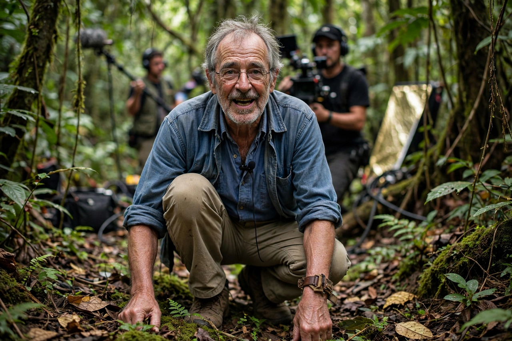

David Attenborough
From Wikipedia, the free encyclopedia
David Attenborough (born 1926) is a British broadcaster, biologist and natural historian, widely regarded as the foremost presenter of nature documentaries. Over a career at the BBC spanning more than seventy years, his authored series — from Zoo Quest (1954) to Life on Earth (1979), The Blue Planet (2001) and Planet Earth (2006) — defined the genre and brought wildlife and conservation to global audiences.

[Image: Photograph of David Attenborough filming on location]
Career
Attenborough joined the BBC in 1952, became controller of BBC Two (commissioning, among much else, Monty Python's Flying Circus and televised snooker), and later director of programming, before returning to programme-making. His 'Life' series applied new filming technology to natural history on a grand scale, and his later work increasingly addressed environmental destruction.
Honours and influence
Knighted in 1985 (and appointed to the Order of Merit), Attenborough has had numerous species named after him, including a dinosaur-era pliosaur and a living echidna. Polls regularly name him among the most trusted and admired Britons; his 2020 film and book A Life on Our Planet present his 'witness statement' on climate change and biodiversity loss.